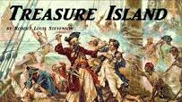

Chapter One
The Old Sea-dog at the “Admiral Benbow”
SQUIRE TRELAWNEY, Dr. Livesey, and the rest of these gentlemen having asked me to write down the whole particulars about
Treasure Island, from the beginning to the end, keeping nothing back but the bearings of the island, and that only because
there is still treasure not yet lifted, I take up my pen in the year of grace 17 and go back to the time when my father
kept the Admiral Benbow inn and the brown old seaman with the sabre cut first took up his lodging under our roof. I remember
him as if it were yesterday, as he came plodding to the inn door, his sea-chest following behind him in a hand-barrow—a
tall, strong, heavy, nut-brown man, his tarry pigtail falling over the shoulder of his soiled blue coat, his hands ragged
and scarred, with black, broken nails, and the sabre cut across one cheek, a dirty, livid white. I remember him looking
round the cover and whistling to himself as he did so, and then breaking out in that old sea-song that he sang so often
afterwards: ‘Fifteen men on the dead man’s chest— Yo-ho-ho, and a bottle of rum!’in the high, old tottering voice that
seemed to have been tuned and broken at the capstan bars. Then he rapped on the door with a bit of stick like a handspike
that he carried, and when my father appeared, called roughly for a glass of rum. This, when it was brought to him, he
drank slowly, like a connoisseur, lingering on the taste and still looking about him at the cliffs and up at our signboard.
‘This is a handy cove,’ says he at length; ‘and a pleasant sittyated grog-shop. Much company, mate?’
My father told him no, very little company, the more was the pity.
‘Well, then,’ said he, ‘this is the berth for me. Here you, matey,’ he cried to the man who trundled the barrow; ‘bring
up alongside and help up my chest. I’ll stay here a bit,’ he continued. ‘I’m a plain man; rum and bacon and eggs is what
I want, and that head up there for to watch ships off. What you mought call me? You mought call me captain. Oh, I see
what you’re at— there"; and he threw down three or four gold pieces on the threshold. ‘You can tell me when I’ve worked
through that,’ says he, looking as fierce as a commander.
And indeed bad as his clothes were and coarsely as he spoke, he had none of the appearance of a man who sailed before the
mast, but seemed like a mate or skipper accustomed to be obeyed or to strike. The man who came with the barrow told us
the mail had set him down the morning before at the Royal George, that he had inquired what inns there were along the
coast, and hearing ours well spoken of, I suppose, and described as lonely, had chosen it from the others for his place
of residence. And that was all we could learn of our guest.
He was a very silent man by custom. All day he hung round the cove or upon the cliffs with a brass telescope; all evening
he sat in a corner of the parlour next the fire and drank rum and water very strong. Mostly he would not speak when spoken
to, only look up sudden and fierce and blow through his nose like a fog-horn; and we and the people who came about our
house soon learned to let him be. Every day when he came back from his stroll he would ask if any seafaring men had gone
by along the road. At first we thought it was the want of company of his own kind that made him ask this question, but
at last we began to see he was desirous to avoid them. When a seaman did put up at the Admiral Benbow (as now and then
some did, making by the coast road for Bristol) he would look in at him through the curtained door before he entered the
parlour; and he was always sure to be as silent as a mouse when any such was present. For me, at least, there was no secret
about the matter, for I was, in a way, a sharer in his alarms. He had taken me aside one day and promised me a silver
fourpenny on the first of every month if I would only keep my ‘weather-eye open for a seafaring man with one leg’ and
let him know the moment he appeared. Often enough when the first of the month came round and I applied to him for my wage,
he would only blow through his nose at me and stare me down, but before the week was out he was sure to think better of
it, bring me my four-penny piece, and repeat his orders to look out for ‘the seafaring man with one leg.’
How that personage haunted my dreams, I need scarcely tell you. On stormy nights, when the wind shook the four corners
of the house and the surf roared along the cove and up the cliffs, I would see him in a thousand forms, and with a thousand
diabolical expressions. Now the leg would be cut off at the knee, now at the hip; now he was a monstrous kind of a creature
who had never had but the one leg, and that in the middle of his body. To see him leap and run and pursue me over hedge
and ditch was the worst of nightmares. And altogether I paid pretty dear for my monthly fourpenny piece, in the shape
of these abominable fancies.
But though I was so terrified by the idea of the seafaring man with one leg, I was far less afraid of the captain himself
than anybody else who knew him. There were nights when he took a deal more rum and water than his head would carry; and
then he would sometimes sit and sing his wicked, old, wild sea-songs, minding nobody; but sometimes he would call for
glasses round and force all the trembling company to listen to his stories or bear a chorus to his singing. Often I have
heard the house shaking with ‘Yo-ho-ho, and a bottle of rum,’ all the neighbours joining in for dear life, with the fear
of death upon them, and each singing louder than the other to avoid remark. For in these fits he was the most overriding
companion ever known; he would slap his hand on the table for silence all round; he would fly up in a passion of anger
at a question, or sometimes because none was put, and so he judged the company was not following his story. Nor would
he allow anyone to leave the inn till he had drunk himself sleepy and reeled off to bed.